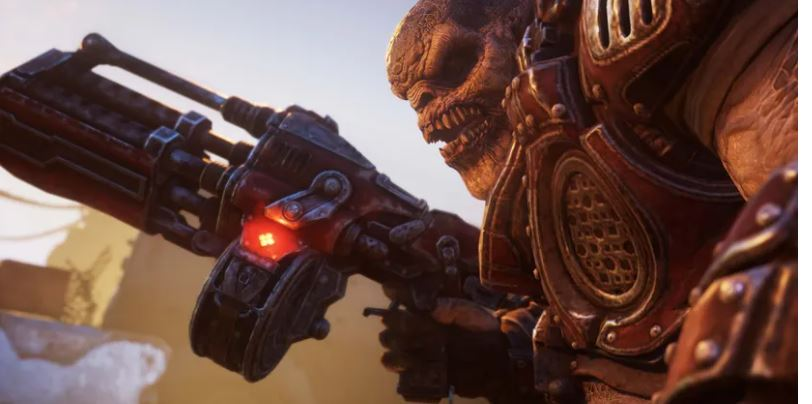

CapyGames
Esta es la página de inicio de CapyGames.
Pokémon Escarlata y Pokémon Púrpura
- Género: Videojuego de rol.
- Desarrollador: Game Freak
Pokémon Escarlata y Pokémon Púrpura son un par de videojuegos de rol desarrollados por Game Freak y publicados por Nintendo y The Pokémon Company para la consola Nintendo Switch. Fueron anunciados en el Pokémon Presents de febrero de 2022 como videojuegos de mundo abierto.Son las primeras entregas de la novena generación de la serie de videojuegos de Pokémon y se lanzaron el 18 de noviembre de 2022.
Ghost of tsusima

- Desarrolador: Sucker Punch
- Genero: Aventura de accion/ Hack and slash/ Mundo abierto
"Ghost of Tsushima" es un videojuego de acción y aventura desarrollado por Sucker Punch Productions y lanzado en julio de 2020 para la PlayStation 4, y posteriormente para PlayStation 5. Ambientado en el Japón feudal durante la primera invasión mongola de Tsushima en 1274, el jugador asume el papel de Jin Sakai, un samurái decidido a proteger su hogar y liberar su tierra de los invasores mongoles
Contenido relacionado con Playstation.
Gears Tactics

- Género: Estrategia / Acción.
- Desarrollador: The Coalition / Splash Damage.
La saga Gears of War también ha dado sus pinitos en el género de estrategia en tiempo real. Fue con Gears Tactics, un sobresaliente título desarrollado por Splash Damage (Brink) que nos ubicaba 12 años antes del primer Gears of War, en la piel de Gabe Diaz, padre de Kait (Gears 5).
Como uno de los líderes de la CGO, tu objetivo es frenar a las hordas Locust, y capturar a una abominación conocida como Ukkon. No es perfecto, pero adapta muy bien los elementos, mecánicas y personajes de la IP de Epic Games y The Coalition al género RTS, tanto en PC como en consolas.
League of legends

- Género: MOBA
- Desarrollador: Riot Games
League of Legends es un videojuego multijugador de arena de batalla en línea desarrollado y publicado por Riot Games.
Inspirándose en Defense of the Ancients, un mapa personalizado para Warcraft III, los fundadores de Riot buscaron desarrollar un juego independiente del mismo género